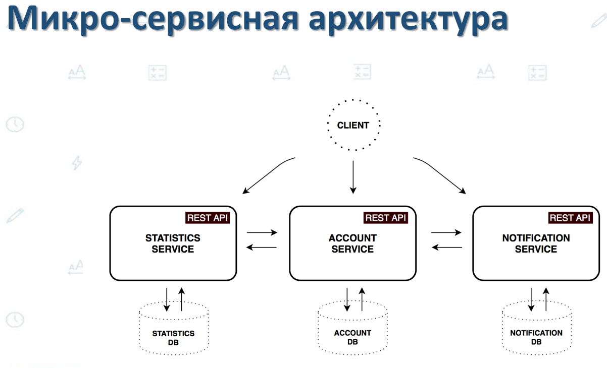
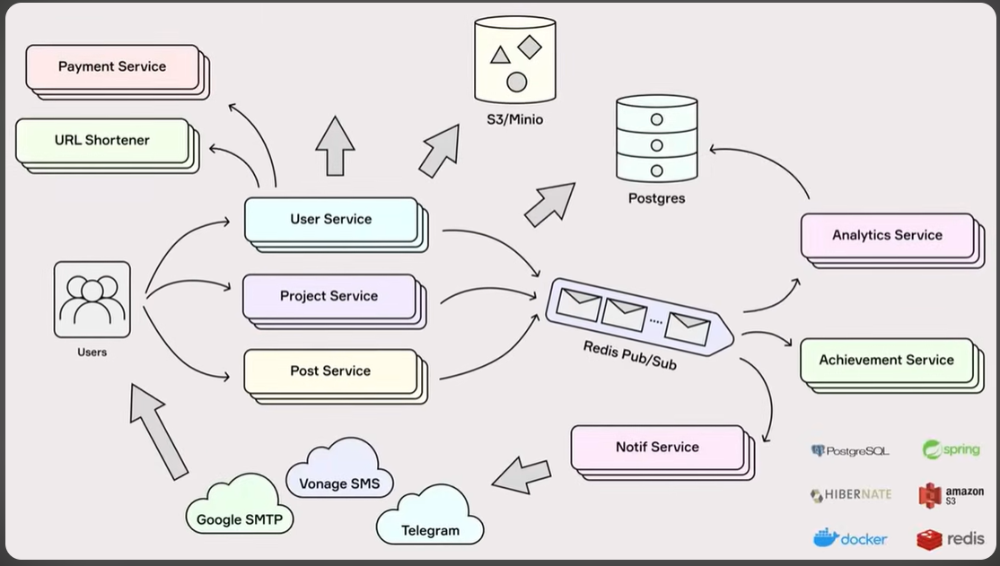
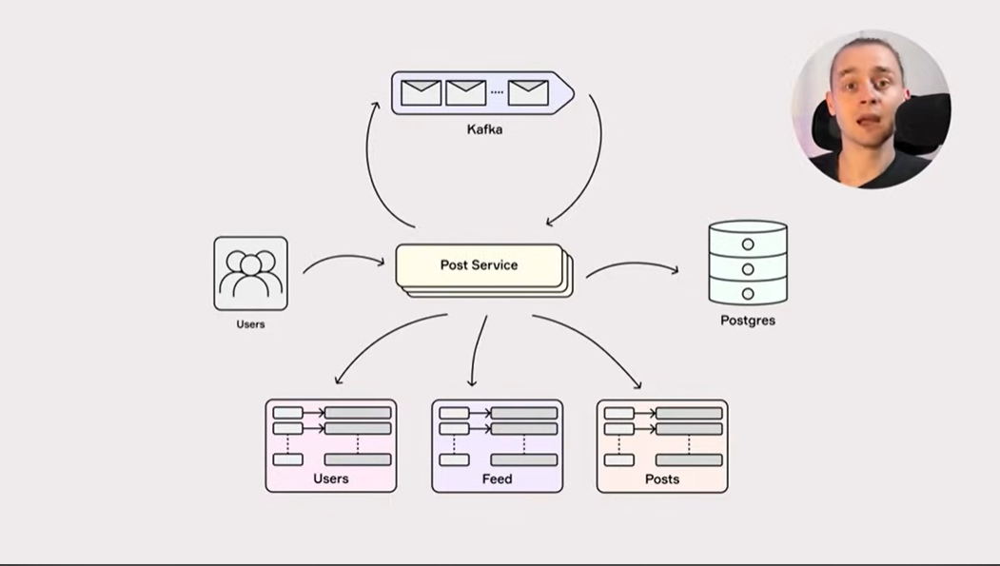
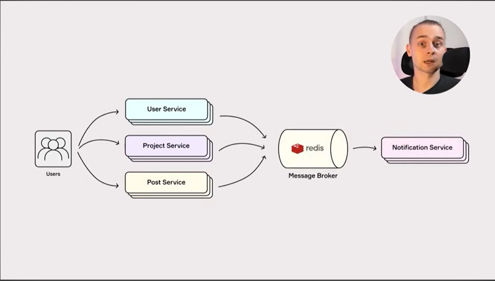
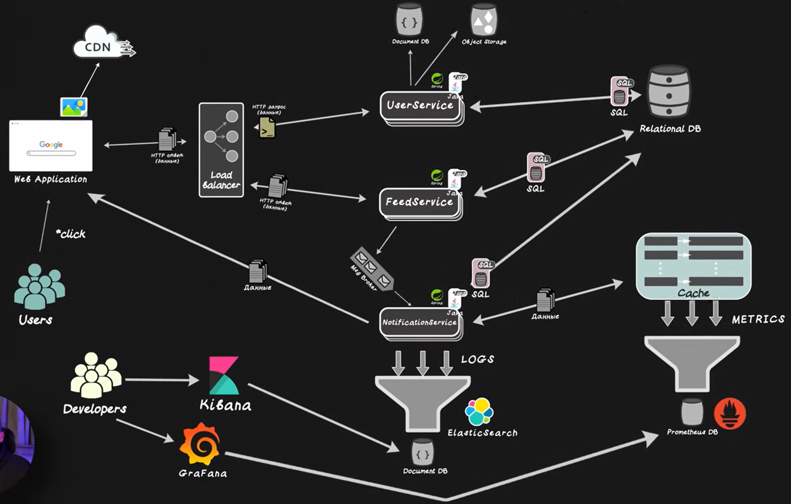
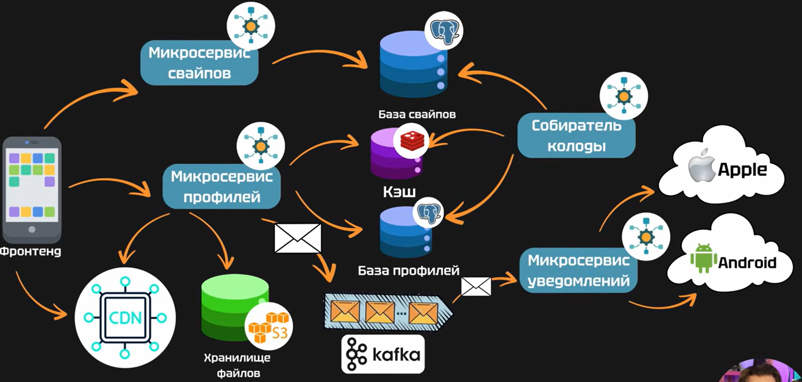

Environment & CI/CD
dev, stage, prod
Git & GitHub
Version Control System, VCS или Revision Control System: система контроля (управления) версий — программное обеспечение для облегчения работы с изменяющейся информацией.
Репозиторий, хранилище — место, где хранятся данные.
Gitlab - хранилище, которое очень удобно использовать в связке с Gitlab CI.
Команды git
| git init | инициализирует новый репозиторий Git в текущей директории |
| git clone < url > | создает локальную копию удаленного репозитория |
| git config | настройка параметров Git, таких как имя пользователя и email |
| git status | отображает состояние файлов в рабочем каталоге и индексе |
| git log | показывает историю коммитов |
| git log --oneline | компактный вывод истории коммитов |
| git log --graph | отображает историю коммитов в виде дерева |
| git log --stat | показывает статистику изменений в каждом коммите |
| git log --author="Имя" | фильтрует коммиты по автору |
| git show < commit > | показывает содержимое конкретного коммита |
| git remote | работа с удаленными репозиториями (добавление, удаление, переименование) |
| git remote -v | отображение удаленных репозиториев и их URL |
| git remote add < имя > < url > | добавляет удаленный репозиторий |
| git remote remove < имя > | удаляет удаленный репозиторий |
| git add < файл > | добавляет указанные файлы в индекс для подготовки к коммиту |
| git add . | добавляет все измененные файлы в индекс |
| git commit -m "Сообщение коммита" | создает новый коммит с указанным сообщением |
| git commit --amend | редактирует последний коммит |
| git diff | показывает различия между рабочим каталогом и индексом |
| git diff --cached | показывает различия между индексом и последним коммитом |
| git diff < коммит1 > < коммит2 > | показывает различия между двумя коммитами |
| git stash | сохраняет незакоммиченные изменения в "стек" |
| git stash pop | восстанавливает последние сохраненные изменения из стека |
| git stash list | показывает список сохраненных изменений |
| git stash drop | удаляет последнее сохранение |
| git clean | удаляет не отслеживаемые файлы |
| git rm < файл > | удаляет файл из индекса и рабочего каталога |
| git branch | показывает список веток. |
| git branch < имя_ветки > | создает новую ветку. |
| git checkout < имя_ветки > | переключается на указанную ветку. |
| git checkout -b < имя_ветки > | создает новую ветку и переключается на нее. |
| git merge < имя_ветки > | сливает указанную ветку с текущей. |
| git rebase < имя_ветки > | перемещает текущую ветку на вершину указанной. |
| git revert < коммит > | создает новый коммит, отменяющий указанный коммит. |
| git reset < коммит > | откатывает репозиторий к указанному коммиту. |
| git fetch < удаленный_репозиторий > | загружает изменения из удаленного репозитория, но не сливает их. |
| git pull < удаленный_репозиторий > | загружает изменения и сливает их с текущей веткой. |
| git push < удаленный_репозиторий > < ветка > | отправляет локальные изменения в удаленный репозиторий. |
| git push -u < удаленный_репозиторий > < ветка > | отправляет локальные изменения и настраивает отслеживание для ветки. |
| git push --delete < удаленный_репозиторий > < ветка > | удаляет ветку на удаленном репозитории. |
| git clone --branch < имя_ветки > < url > | клонирует конкретную ветку. |
| git remote prune < удаленный_репозиторий > | удаляет ссылки на удаленные ветки, которые были удалены. |
Docker & Docker Compose
Docker
vscode-wsl-docker install| wsl --install | установить wsl |
| shutdown -r -t 5 | перезагрузить компьютер |
| wsl --status | версия wsl |
| wsl.exe -l -o | список доступных дистрибутивов |
| wsl.exe | запуск wsl |
| wsl.exe -l -v | режим работы wsl |
| -it | объединяет две опции: -i (interactive) и -t (tty) |
| -i | (--interactive) означает, что контейнер будет получать стандартный поток ввода с хоста и направлять его в приложение, работающее в контейнере |
| -t | (--tty) указывает докеру создать для запущенного приложения псевдотерминал, что позволит удобно работать с ним из вашего терминала |
| ubuntu | название образа, который мы запускаем Ubuntu |
| bash | команда внутри контейнера ubuntu |
| docker run -it ubuntu bash | запустить контейнер |
| docker ps | список идентификаторов контейнеров |
| docker stop < container_id > | остановить контейнер |
| docker restart < container_id > | перезапустить контейнер |
| docker rm < container_id > | удалить контейнер |
| docker rm -f < container_id > | одновременно остановить и удалить контейнер |
| docker pull ubuntu | загрузка образа без запуска |
| docker pull ubuntu:20.04 | указать конкретную версию образа |
| docker ../images | локально доступные образы |
| docker rmi < image_id > | удаление образа |
| docker ../images | идентификатор образа |
Dockerfile и Docker image
- Образ Docker — это автономный и исполняемый пакет, включающий всё необходимое для запуска части программного обеспечения, включая код, среды выполнения, библиотеки и системные зависимости.
- Образы Docker служат шаблоном для создания контейнеров.
- Образы описываются с помощью Dockerfile.
Dockerfile — это текстовый файл с командами для сборки Docker-образа, которые описывают шаги установки зависимостей и конфигурацию приложения с учетом контекста приложения.
Контекст Dockerfile — это набор файлов, которые будут отправлены на Docker daemon для сборки образа, часто это директория, в которой находится сам Dockerfile и любые другие файлы, необходимые для сборки (в основном, код).
| FROM node:14 | указать базовый образ |
| WORKDIR /app | установить рабочую директорию внутри будущего контейнера |
| COPY package*.json ./ | копировать package.json и package-lock.json в /app |
| RUN npm install | установить зависимости |
| COPY . . | копировать файлы приложения (с хоста (контекст) в образ (/app)) |
| EXPOSE 3000 | открыть порт |
| CMD ["node", "server.js"] | запустить приложение |
| docker build -t node-app:latest | собрать приложение -t - указывает docker собрать образ с тегом: node-app — название образа, latest — тег |
| docker run node-app | запустить приложение |
FROM node:14
WORKDIR /app
COPY package*.json ./
RUN npm install
COPY . .
EXPOSE 3000
CMD ["node", "server.js"]
docker build -t node-app:latest
docker run node-app
Multistage
- Каждая команда создает свой собственный слой образа.
- Из-за этого образы могут раздуваться до огромных размеров.
- Для того, чтобы этого не происходило, существует поэтапная сборка.
- Поэтапная (multistage) сборка - сборка позволяет уменьшить размер итоговых образов, используя несколько команд FROM.
BUILD STAGE
FROM golang:1.16 AS build
WORKDIR /go/src/app
COPY . .
RUN go build -o myapp
RUN STAGE
FROM alpine:latest
WORKDIR /root/
COPY --from=build /go/src/app/myapp .
CMD ["./myapp"]
В итоговый образ попадет только то, что было в образе alpine плюс исполняемый файл myapp.
Docker Hub — это репозиторий:
- Искать и загружать публичные образы, предоставляемые сообществом;
- Создавать и делиться собственными образами;
- Управлять автоматическими сборками и интеграциями с системой контроля версий.
| docker pull ubuntu:latest | скачать нужный образ на локальную машину |
| docker run -it ubuntu:latest /bin/bash | запустить контейнер |
| docker login | создать аккаунт на Docker Hub и авторизоваться в командной строке |
|
docker tag < image_id > your_dockerhub_username/repo_name:tag docker push your_dockerhub_username/repo_name:tag |
выгрузить собственный образ |
Готовые образы
- Alpine Linux (alpine) — это крошечный дистрибутив Linux на основе BusyBox, его образ имеет размер всего 5 МБ;
- PHP (php-cli, php-fpm) — образы для интерпретатора php, включает все необходимое для разработки под этот язык;
- MySQL (mysql) — всем известная БД;
- NGINX (nginx) — пригодится для создания обратного прокси-сервера;
- Redis (redis) — высокопроизводительная in-memory база данных, используемая для кеширования и управления сессиями;
- Node.js (node) — среда выполнения JavaScript, необходимая для запуска серверного кода на базе Node.js.
Почти у каждого популярного образа есть alpine- и slim-версии, базовый в виде alpine, slim-версии не включают в себя инструменты для сборки, а предназначены только для исполнения.
Сети docker
Bridge - используется по умолчанию, создается виртуальный мост, который позволяет контейнерам общаться друг с другом и с хост-машиной.
docker network create --driver bridge app_network
docker run -d --network app_network --name app nginx
Host
- В этом режиме контейнер использует сетевой стек хост-машины.
- Это означает, что контейнер и хост имеют общий IP-адрес и порты.
- Host-сеть полезна для уменьшения сетевой задержки, однако она уменьшает изоляцию между контейнером и хостом.
docker run -d --network host nginxOverlay
- Этот режим в основном используется в кластерных средах и Docker Swarm.
- Overlay-сети позволяют контейнерам, работающим на разных физических или виртуальных машинах, общаться друг с другом так, будто они находятся на одной сети.
- Это достигается путем создания распределенной сети поверх существующей физической инфраструктуры.
docker network create --driver overlay --subnet 10.0.9.0/24 my_overlay_network- Коммуникация между контейнерами является ключевым аспектом для микросервисной архитектуры и распределенных систем.
- В Docker вы можете легко настроить взаимодействие между контейнерами, используя созданные вами сети.
- Встроенный DNS-сервис Docker позволяет контейнерам общаться друг с другом по именам хоста: docker exec container2 ping container1.
| docker network ls | список доступных сетей |
| docker network disconnect < network_name > < container_id > | отключение контейнера от сети |
| docker network rm < network_name > | удалить сеть |
Volumes и bind mounts
- Volumes и bind mounts — два ключевых механизма для работы с данными в контейнерах.
- Они необходимы, чтобы эффективно управлять данными, обеспечивать их сохранность и доступность.
- Docker volumes - чтобы хранить данные отдельно от контейнера.
- Даже в случае, если контейнер удалится, данные, хранящиеся в volume, останутся нетронутыми, что важно, когда проект уже развернут.
- Bind Mounts немного отличаются от volumes. Этот подход представляет собой простое монтирование директорий с хоста в директории внутри контейнера.
- Это позволяет контейнерам иметь прямой доступ к данным на хосте, что удобно для среды разработки и тестирования.
- При bind mounts изменения, внесенные в файлы на хосте, будут немедленно отражаться внутри контейнера, и наоборот.
volume:
type=volume,src=my_volume,target=/usr/local/data
// либо
docker volume create my_volume && docker run -d -v my_volume:/data my_image
bind mount:
type=bind,src=/path/to/data,target=/usr/local/data
// либо
docker run -d -v /path/on/host:/path/in/container my_image
| Volumes | Bind mounts | |
|---|---|---|
| Путь на хосте | Выбирает Docker | Указывает разработчик |
| Новый volume | Создает | Не создает |
| Драйверы volumes | Поддерживает | Не поддерживает |
Docker Compose
Docker Compose — позволяет описать и запустить сложные приложения, состоящие из нескольких контейнеров:
- Декларативное описание сервисов, volumes и networks в формате yaml.
- Управление всеми службами, указанными в конфигурационном файле, при помощи единой утилиты docker compose.
- Управление жизненным циклом контейнеров.
- Веб-приложение, состоящее из веб-сервера и базы данных.
- Docker Compose позволяет автоматизировать этот процесс, описав конфигурацию проекта в одном файле.
- Для начала работы с Docker Compose необходимо создать файл docker-compose.yml, в котором будет описана конфигурация вашего приложения.
Структура docker-compose.yml:
services:
web:
image: nginx:latest
ports:
- "8000:80"
networks:
- app-network
app:
build:
args:
user: www-data
uid: 33
app_mode: development
context: .
dockerfile: Dockerfile
restart: always
image: app
container_name: app
working_dir: /var/www/
volumes:
-'./:/var/www'
networks:
- app-network
db:
image: mysql:latest
volumes:
-'app-db:/var/lib/mysql'
environment:
DB_PASSWORD: password
networks:
- app-network
networks:
app-network:
name: app-network
driver: bridge
volumes:
app-db:
driver: local- services содержит описание всех служб (контейнеров), участвующих в работе приложения.
- web: Определяет контейнер с веб-сервером Nginx, который будет доступен на порту 80.
- Синтаксис '8000:80' читается так: 'host_port:container_port', докер будет слушать 8000 порт на хосте и проксировать его в nginx-контейнер и обратно.
- app: главный контейнер с приложением. Описывается в Dockerfile, использует контекст текущей директории (привычная всем точка) и делает bind mount './' в '/var/www' в контейнере.
- db: Определяет контейнер с базой данных MySQL, в который передается переменная среды DB_PASSWORD, а также данные базы данных хранятся в volume app-db, чтобы не потерять информацию в случае остановки контейнера.
- networks: Определяет пользовательские сети, в данном случае bridge-сеть app-network, используемую всеми контейнерами для связи друг с другом.
- volumes: Определяет все необходимые тома, в данном случае том для базы данных.
Dockefile to build Docker Image of Apache WebServer running on Ubuntu
FROM ubuntu:16.04
RUN apt-get -y update
RUN apt-get -y install apache2
RUN echo 'Hello World from Docker!' > /var/www/html/index.html
CMD ["/usr/sbin/apache2ctl", "-D","FOREGROUND"]
EXPOSE 80
docker run -it --name node-octo alpine sh
apk add nodejs
node --version
// скомител свой образ node-octo для DockerHub под учеткой vamalevany с тэгом 12.14
docker commit node-octo vamalevany/node-octo:12.14
docker ../images
docker login
Username: vamalevany
Password:
// отправляем образ в репозиторий на DockerHub под учеткой vamalevany
docker push vamalevany/node-octo
// удаляем созданный образ
docker rmi vamalevany/node-octo:12.14
// скачиваем образ из DockerHub под учеткой vamalevany
docker pull vamalevany/node-octo:12.14
| FROM alpine | за основу берем образ alpine linux |
| RUN apk add npm && i -g http-server | каждая строка RUN это новый слой в docker, пакетный менеджер alpine apk устанавливает nodejs со своим пакетным менеджером и устанавливает (i - install) глобально (-g) http-server |
| VOLUME /home/server/ | папка для хранения |
| WORKDIR /home/server/ | рабочая папка |
| COPY ./ /home/server/ | скопировать содержимое из текущей директории (где собирается образ из Dockerfile) в /home/server образа |
| EXPOSE 8080 | указываем порт на котором будет работать контейнер |
| CMD http-server | запуск http-server при старте контейнера |
| docker build -t vamalevany/node:v1 . | строим образ из Dockerfile с именем (-t) vamalevany/node:v1, точка указывает, что место сборки текущая директория |
Создание Dockerfile для внешней сборки приложений
FROM node
RUN npm i -g yarn
VOLUME /opt/server/
WORKDIR /opt/server/
COPY ./ /opt/server/
EXPOSE 3000
CMD yarn start
docker build -t vamalevany/web-server-external:v1 -f Dockerfile .
Создание Dockerfile для внутренней сборки приложений
FROM alpine
// будем использовать файлы с git, \ - экранирует перевод строки
RUN apk add git \
// устанавливаем yarn
&& apk add yarn \
// копируем папку проекта с git
&& git clone https://github.com/vamalevany/cont.git \
// переходим в папку проекта на сервере
&& cd cont \
// запускаем yarn для обновления зависимостей
&& yarn
VOLUME ./cont
WORKDIR ./cont
EXPOSE 3000
CMD yarn start
docker build -t vamalevany/web-server-internal:v1 -f Dockerfile .
- В учетке DockerHub можно настроить автосборку и автообновление образов на самом DockerHub из файлов на GitHub.
- При обновлении файлов на GitHub будет обновляться образ на DockerHub, созданный из этих файлов.
- Docker Compose - позволяет запускать образы в связке друг с другом.
- Docker-compose install: - в примере версия 1.25.4
sudo curl -L "https://github.com/docker/compose/releases/download/1.25.4/docker-compose-$(uname -s)-$(uname -m)" -o /usr/local/bin/docker-compose
docker-compose --version
# (если не найдет, нужно сделать ссылку на другую директорию, например sudo ln -s /usr/local/bin/docker-compose /usr/bin/docker-compose)
nano docker-compose.yml: docker-compose файл
version: '3'
services:
db:
// образ берем с DockerHub
image: postgres:11.4-alpine
// имя можем придумать мы либо сформирует автоматически
container_name: postgres
// проброс портов из образа на сервер
ports: - 5432:5432
// сохраняет базу данных вне контейнера в директории ./pg_data
volumes: - ./pg_data:/var/lib/postgresql/data/pgdata
environment:
// пароль к базе данных, пользователь по умолчанию postgres
POSTGRES_PASSWORD: 123
// название базы данных
POSTGRES_DB: docker_test
// расположение базы данных
PGDATA: /var/lib/postgresql/data/pgdata
// в случае остановки приложения db без команды docker-compose будет его перезапускать
restart: always
app:
// собираем контейнер на собственном образе, который хранится на DockerHub
image: vamalevany/web-server
// имя придумываем сами
container_name: application
// внутренний порт в контейнере выставляем наружу такой же
ports: - 3000:3000
environment:
// переменная POSTGRES_HOST заданна в образе для подключения базы данных
POSTGRES_HOST: db
restart: always
// указываем зависимости, т.е. перед запуском контейнера app должен быть запущен контейнер db
links: - db
nginx:
// образ с DockerHub
image: nginx:1.17.2-alpine
// имя придумываем
container_name: nginx
// пробрасываем настройки в контейнер с локального компьютера
volumes: - ./default.conf:/etc/nginx/conf.d/default.conf
// зависимости запуска
links: - app
// пробрасываем порт из контейнера наружу
ports: - 8989:8989
nano default.conf: Настройка прокси-сервера nginx
server {
listen 8989;
server_name localhost;
location {
< span>указываем где находится контейнер приложения< /span>
proxy_pass http://app:3000;
proxy_set_header Host $host;
proxy_set_header X-Real_IP $remote_addr;
}
}
| docker-compose --help | помощь |
| docker-compose up | создает и запускает контейнеры |
| docker-compose start | запускает контейнеры |
| docker-compose ../images | список образов и в каких контейнерах они используются |
| docker-compose ps | список контейнеров |
| docker-compose logs | логи |
| docker-compose stop | остановка контейнеров |
| docker-compose down | останавливает и удаляет все контейнеры текущего docker-compose файла |
| docker-compose up --scale app=5 | запустить контейнер app в пять потоков |
nano docker-compose.yml: docker-compose файл с вариантом запуска пяти контейнеров (каждый на своем порту)
version: '3'
services:
db:
image: postgres:11.4-alpine
container_name: postgres
ports: - 5432:5432
volumes: - ./pg_data:/var/lib/postgresql/data/pgdata
environment:
POSTGRES_PASSWORD: 123
POSTGRES_DB: docker_test
PGDATA: /var/lib/postgresql/data/pgdata
restart: always
app:
image: vamalevany/web-server
ports: - 3000-3005:3000 - задаем пул портов
environment:
POSTGRES_HOST: db
restart: always
links: - db
nginx:
image: nginx:1.17.2-alpine
container_name: nginx
volumes: - ./default.conf:/etc/nginx/conf.d/default.conf
links: - app
ports: - 8989:8989
nano default.conf: Настройка прокси-сервера nginx при запуске пяти контейнеров, аккумулирование прослушиваемых портов:
upstream application {
server app:3000;
server app:3001;
server app:3002;
server app:3003;
server app:3004;
server app:3005;
}
server {
listen 8989;
server_name localhost;
# пул перебираемых портов
location {
proxy_pass http://application;
proxy_set_header Host $host;
proxy_set_header X-Real_IP $remote_addr;
}
}Microservice








kubernetes